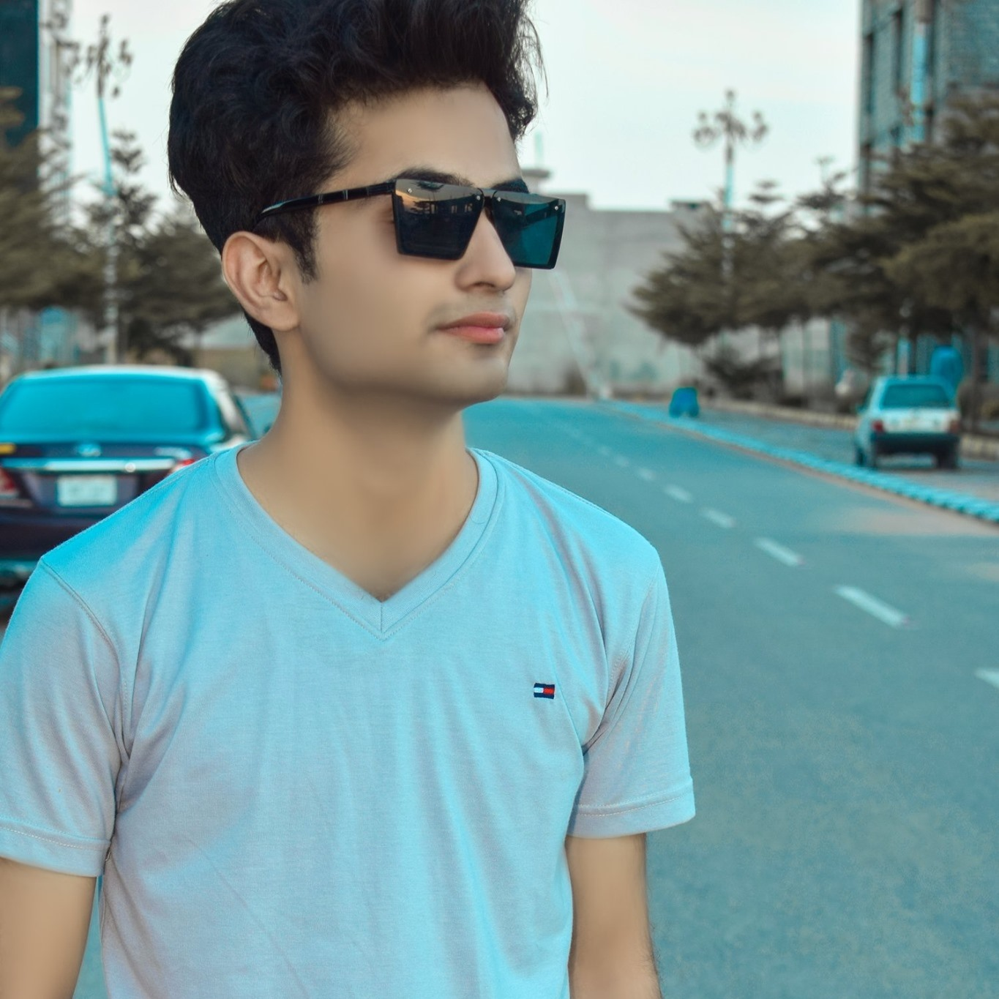

So we met in 2020 but we were not friends at that time because both were ultra introverts
Well at that time he was the Pakistan's Top Anime content creator with 250k Subscribers. He didn't knew about the future and he just sold out his channel. After when sold we met again because he had some ideas for new content and he was hoping to work with me as i was the only person that actually knew about little anime stuffs and youtube and yeah also tech. His brother (Raza) he tought us the true path, and we both are lucky to have him in our lifes or else we were both astray.

This is how he used to look.
Let's talk about his life,
Following are his best qualities:
From these qualities you would have already judged him that hes a perfect human being
Let's have a look to his dark side:
But still he's a nice guy but i would say better than all typical Pakistani's.
Although he's very introvert because he lack self trust, but still hes a Social Person
Although he's a anime nerd over 1k animes he has alrady watched. He knows everything about anime genres, categories etc. His fav anime website is 9anime whenever we meet he always blah blah about animes and weird stuff but it seems cool.
Sexy Handsome boy with a ring and grandpa's glasses
Because of Zulzinnah he's looking good or else :/